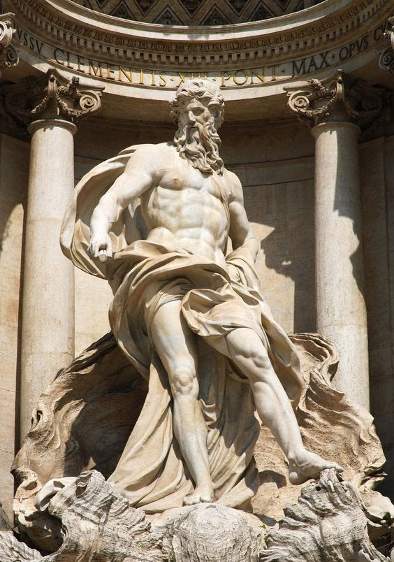

Греко-римська міфологія

Греко-римська культурна спадщина є традиційним джерелом для образів, сюжетів та мотивів класичного мистецтва. Завдяки широкому ареалу поширення вони набули означення «загальнолюдського надбання». Античність заклала основи європейської культури, справила вплив на політичне і релігійне мислення, літературу і мистецтво, на філософські та юридичні погляди. На ідеї античності опирались цілі культурні епохи.